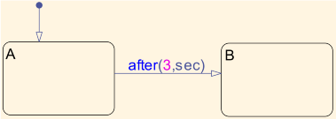
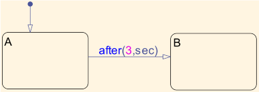
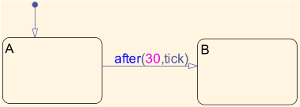

Using Absolute Time Temporal Logic
This model demonstrates the basic semantics of absolute time temporal logic in Stateflow®.
The basic idea of absolute time temporal logic is simple. Just like the expression after(10, E) returns true after 10 occurrences of the event E have occurred, the expression after(10, sec) returns true after 10 seconds have elapsed since we entered the currently active state.
Contents
With Absolute Time Temporal Logic
The first chart WithAbsoluteTime consists of two states A and B. The transition from A to B is guarded by the expression after(3,sec). This means to transition from A to B three seconds after we enter A.
 
 With the Implicit Tick Event
The same logic can also be accomplished by using the implicit tick event provided by Stateflow. This is shown in the chart WithTickEvent. Note that in this case, we need to be careful to divide the time which we wish to remain in A by the sample time of the chart. In this case, since the sample rate of the model is 0.1 seconds, we use (3/0.1 = 30).
When we simulate the model, we see that the outputs from the two charts are identical.

Advantages of Using Absolute Time Temporal Logic
There are quite a few advantages of using absolute time temporal logic rather than the implicit tick event. Amongst them:
- The temporal delay expression is independent of the sample rate of the model. For example, if the sample rate of the model was changed to 0.2 seconds, then in WithAbsoluteTime, the transition from A to B will still happen at t = 3 seconds, while in the case of WithTickEvent, the transition will occur at t = 6 seconds.
- Absolute time temporal logic can be used in charts which have function call input events. However, the tick event is not available in charts with function call inputs.